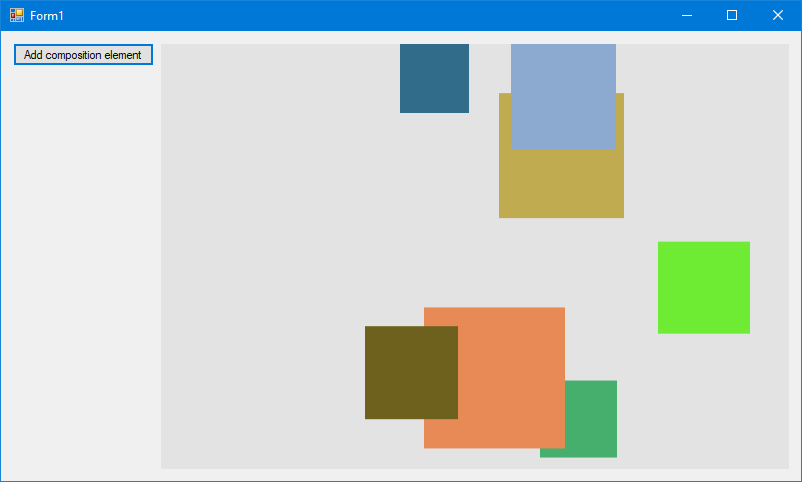

Using the Visual Layer with Windows Forms
You can use Windows Runtime Composition APIs (also called the Visual layer) in your Windows Forms apps to create modern experiences that light up for Windows users.
The complete code for this tutorial is available on GitHub: Windows Forms HelloComposition sample.
Prerequisites
The UWP hosting API has these prerequisites.
- We assume that you have some familiarity with app development using Windows Forms and UWP. For more info, see:
- .NET Framework 4.7.2 or later
- Windows 10 version 1803 or later
- Windows 10 SDK 17134 or later
How to use Composition APIs in Windows Forms
In this tutorial, you create a simple Windows Forms UI and add animated Composition elements to it. Both the Windows Forms and Composition components are kept simple, but the interop code shown is the same regardless of the complexity of the components. The finished app looks like this.

Create a Windows Forms project
The first step is to create the Windows Forms app project, which includes an application definition and the main form for the UI.
To create a new Windows Forms Application project in Visual C# named HelloComposition:
- Open Visual Studio and select File > New > Project.
The New Project dialog opens. - Under the Installed category, expand the Visual C# node, and then select Windows Desktop.
- Select the Windows Forms App (.NET Framework) template.
- Enter the name HelloComposition, select Framework .NET Framework 4.7.2, then click OK.
Visual Studio creates the project and opens the designer for the default application window named Form1.cs.
Configure the project to use Windows Runtime APIs
To use Windows Runtime (WinRT) APIs in your Windows Forms app, you need to configure your Visual Studio project to access the Windows Runtime. In addition, vectors are used extensively by the Composition APIs, so you need to add the references required to use vectors.
NuGet packages are available to address both of these needs. Install the latest versions of these packages to add the necessary references to your project.
- Microsoft.Windows.SDK.Contracts (Requires default package management format set to PackageReference.)
- System.Numerics.Vectors
Note
While we recommend using the NuGet packages to configure your project, you can add the required references manually. For more info, see Enhance your desktop application for Windows. The following table shows the files that you need to add references to.
| File | Location |
|---|---|
| System.Runtime.WindowsRuntime | C:\Windows\Microsoft.NET\Framework\v4.0.30319 |
| Windows.Foundation.UniversalApiContract.winmd | C:\Program Files (x86)\Windows Kits\10\References<sdk version>\Windows.Foundation.UniversalApiContract<version> |
| Windows.Foundation.FoundationContract.winmd | C:\Program Files (x86)\Windows Kits\10\References<sdk version>\Windows.Foundation.FoundationContract<version> |
| System.Numerics.Vectors.dll | C:\WINDOWS\Microsoft.Net\assembly\GAC_MSIL\System.Numerics.Vectors\v4.0_4.0.0.0__b03f5f7f11d50a3a |
| System.Numerics.dll | C:\Program Files (x86)\Reference Assemblies\Microsoft\Framework.NETFramework\v4.7.2 |
Create a custom control to manage interop
To host content you create with the visual layer, you create a custom control derived from Control. This control gives you access to a window Handle, which you need in order to create the container for your visual layer content.
This is where you do most of the configuration for hosting Composition APIs. In this control, you use Platform Invocation Services (PInvoke) and COM Interop to bring Composition APIs into your Windows Forms app. For more info about PInvoke and COM Interop, see Interoperating with unmanaged code.
Tip
If you need to, check the complete code at the end of the tutorial to make sure all the code is in the right places as you work through the tutorial.
Add a new custom control file to your project that derives from Control.
- In Solution Explorer, right click the HelloComposition project.
- In the context menu, select Add > New Item....
- In the Add New Item dialog, select Custom Control.
- Name the control CompositionHost.cs, then click Add. CompositionHost.cs opens in the Design view.
Switch to code view for CompositionHost.cs and add the following code to the class.
// Add // using Windows.UI.Composition; IntPtr hwndHost; object dispatcherQueue; protected ContainerVisual containerVisual; protected Compositor compositor; private ICompositionTarget compositionTarget; public Visual Child { set { if (compositor == null) { InitComposition(hwndHost); } compositionTarget.Root = value; } }Add code to the constructor.
In the constructor, you call the InitializeCoreDispatcher and InitComposition methods. You create these methods in the next steps.
public CompositionHost() { InitializeComponent(); // Get the window handle. hwndHost = Handle; // Create dispatcher queue. dispatcherQueue = InitializeCoreDispatcher(); // Build Composition tree of content. InitComposition(hwndHost); }Initialize a thread with a CoreDispatcher. The core dispatcher is responsible for processing window messages and dispatching events for WinRT APIs. New instances of Compositor must be created on a thread that has a CoreDispatcher.
- Create a method named InitializeCoreDispatcher and add code to set up the dispatcher queue.
// Add // using System.Runtime.InteropServices; private object InitializeCoreDispatcher() { DispatcherQueueOptions options = new DispatcherQueueOptions(); options.apartmentType = DISPATCHERQUEUE_THREAD_APARTMENTTYPE.DQTAT_COM_STA; options.threadType = DISPATCHERQUEUE_THREAD_TYPE.DQTYPE_THREAD_CURRENT; options.dwSize = Marshal.SizeOf(typeof(DispatcherQueueOptions)); object queue = null; CreateDispatcherQueueController(options, out queue); return queue; }- The dispatcher queue requires a PInvoke declaration. Place this declaration at the end of the code for the class. (We place this code inside a region to keep the class code tidy.)
#region PInvoke declarations //typedef enum DISPATCHERQUEUE_THREAD_APARTMENTTYPE //{ // DQTAT_COM_NONE, // DQTAT_COM_ASTA, // DQTAT_COM_STA //}; internal enum DISPATCHERQUEUE_THREAD_APARTMENTTYPE { DQTAT_COM_NONE = 0, DQTAT_COM_ASTA = 1, DQTAT_COM_STA = 2 }; //typedef enum DISPATCHERQUEUE_THREAD_TYPE //{ // DQTYPE_THREAD_DEDICATED, // DQTYPE_THREAD_CURRENT //}; internal enum DISPATCHERQUEUE_THREAD_TYPE { DQTYPE_THREAD_DEDICATED = 1, DQTYPE_THREAD_CURRENT = 2, }; //struct DispatcherQueueOptions //{ // DWORD dwSize; // DISPATCHERQUEUE_THREAD_TYPE threadType; // DISPATCHERQUEUE_THREAD_APARTMENTTYPE apartmentType; //}; [StructLayout(LayoutKind.Sequential)] internal struct DispatcherQueueOptions { public int dwSize; [MarshalAs(UnmanagedType.I4)] public DISPATCHERQUEUE_THREAD_TYPE threadType; [MarshalAs(UnmanagedType.I4)] public DISPATCHERQUEUE_THREAD_APARTMENTTYPE apartmentType; }; //HRESULT CreateDispatcherQueueController( // DispatcherQueueOptions options, // ABI::Windows::System::IDispatcherQueueController** dispatcherQueueController //); [DllImport("coremessaging.dll", EntryPoint = "CreateDispatcherQueueController", CharSet = CharSet.Unicode)] internal static extern IntPtr CreateDispatcherQueueController(DispatcherQueueOptions options, [MarshalAs(UnmanagedType.IUnknown)] out object dispatcherQueueController); #endregion PInvoke declarationsYou now have the dispatcher queue ready and can begin to initialize and create Composition content.
Initialize the Compositor. The Compositor is a factory that creates a variety of types in the Windows.UI.Composition namespace spanning the visual layer, effects system, and animation system. The Compositor class also manages the lifetime of objects created from the factory.
private void InitComposition(IntPtr hwndHost) { ICompositorDesktopInterop interop; compositor = new Compositor(); object iunknown = compositor as object; interop = (ICompositorDesktopInterop)iunknown; IntPtr raw; interop.CreateDesktopWindowTarget(hwndHost, true, out raw); object rawObject = Marshal.GetObjectForIUnknown(raw); compositionTarget = (ICompositionTarget)rawObject; if (raw == null) { throw new Exception("QI Failed"); } containerVisual = compositor.CreateContainerVisual(); Child = containerVisual; }- ICompositorDesktopInterop and ICompositionTarget require COM imports. Place this code after the CompositionHost class, but inside the namespace declaration.
#region COM Interop /* #undef INTERFACE #define INTERFACE ICompositorDesktopInterop DECLARE_INTERFACE_IID_(ICompositorDesktopInterop, IUnknown, "29E691FA-4567-4DCA-B319-D0F207EB6807") { IFACEMETHOD(CreateDesktopWindowTarget)( _In_ HWND hwndTarget, _In_ BOOL isTopmost, _COM_Outptr_ IDesktopWindowTarget * *result ) PURE; }; */ [ComImport] [Guid("29E691FA-4567-4DCA-B319-D0F207EB6807")] [InterfaceType(ComInterfaceType.InterfaceIsIUnknown)] public interface ICompositorDesktopInterop { void CreateDesktopWindowTarget(IntPtr hwndTarget, bool isTopmost, out IntPtr test); } //[contract(Windows.Foundation.UniversalApiContract, 2.0)] //[exclusiveto(Windows.UI.Composition.CompositionTarget)] //[uuid(A1BEA8BA - D726 - 4663 - 8129 - 6B5E7927FFA6)] //interface ICompositionTarget : IInspectable //{ // [propget] HRESULT Root([out] [retval] Windows.UI.Composition.Visual** value); // [propput] HRESULT Root([in] Windows.UI.Composition.Visual* value); //} [ComImport] [Guid("A1BEA8BA-D726-4663-8129-6B5E7927FFA6")] [InterfaceType(ComInterfaceType.InterfaceIsIInspectable)] public interface ICompositionTarget { Windows.UI.Composition.Visual Root { get; set; } } #endregion COM Interop
Create a custom control to host composition elements
It's a good idea to put the code that generates and manages your composition elements in a separate control that derives from CompositionHost. This keeps the interop code you created in the CompositionHost class reusable.
Here, you create a custom control derived from CompositionHost. This control is added to the Visual Studio toolbox so you can add it to your form.
Add a new custom control file to your project that derives from CompositionHost.
- In Solution Explorer, right click the HelloComposition project.
- In the context menu, select Add > New Item....
- In the Add New Item dialog, select Custom Control.
- Name the control CompositionHostControl.cs, then click Add. CompositionHostControl.cs opens in the Design view.
In the Properties pane for CompositionHostControl.cs design view, set the BackColor property to ControlLight.
Setting the background color is optional. We do it here so you can see your custom control against the form background.
Switch to code view for CompositionHostControl.cs and update the class declaration to derive from CompositionHost.
class CompositionHostControl : CompositionHostUpdate the constructor to call the base constructor.
public CompositionHostControl() : base() { }
Add composition elements
With the infrastructure in place, you can now add Composition content to the app UI.
For this example, you add code to the CompositionHostControl class that creates and animates a simple SpriteVisual.
Add a composition element.
In CompositionHostControl.cs, add these methods to the CompositionHostControl class.
// Add // using Windows.UI.Composition; public void AddElement(float size, float offsetX, float offsetY) { var visual = compositor.CreateSpriteVisual(); visual.Size = new Vector2(size, size); // Requires references visual.Brush = compositor.CreateColorBrush(GetRandomColor()); visual.Offset = new Vector3(offsetX, offsetY, 0); containerVisual.Children.InsertAtTop(visual); AnimateSquare(visual, 3); } private void AnimateSquare(SpriteVisual visual, int delay) { float offsetX = (float)(visual.Offset.X); Vector3KeyFrameAnimation animation = compositor.CreateVector3KeyFrameAnimation(); float bottom = Height - visual.Size.Y; animation.InsertKeyFrame(1f, new Vector3(offsetX, bottom, 0f)); animation.Duration = TimeSpan.FromSeconds(2); animation.DelayTime = TimeSpan.FromSeconds(delay); visual.StartAnimation("Offset", animation); } private Windows.UI.Color GetRandomColor() { Random random = new Random(); byte r = (byte)random.Next(0, 255); byte g = (byte)random.Next(0, 255); byte b = (byte)random.Next(0, 255); return Windows.UI.Color.FromArgb(255, r, g, b); }
Add the control to your form
Now that you have a custom control to host Composition content, you can add it to the app UI. Here, you add an instance of the CompositionHostControl you created in the previous step. CompositionHostControl is automatically added to the Visual Studio toolbox under project name Components.
In Form1.CS design view, add a Button to the UI.
- Drag a Button from the toolbox onto Form1. Place it in the upper left corner of the form. (See the image at the start of the tutorial to check the placement of the controls.)
- In the Properties pane, change the Text property from button1 to Add composition element.
- Resize the Button so that all the text shows.
(For more info, see How to: Add Controls to Windows Forms.)
Add a CompositionHostControl to the UI.
- Drag a CompositionHostControl from the toolbox onto Form1. Place it to the right of the Button.
- Resize the CompositionHost so that it fills the remainder of the form.
Handle the button click event.
- In the Properties pane, click the lightning bolt to switch to the Events view.
- In the events list, select the Click event, type Button_Click, and press Enter.
- This code is added in Form1.cs:
private void Button_Click(object sender, EventArgs e) { }Add code to the button click handler to create new elements.
- In Form1.cs, add code to the Button_Click event handler you created previously. This code calls CompositionHostControl1.AddElement to create a new element with a randomly generated size and offset. (The instance of CompositionHostControl was automatically named compositionHostControl1 when you dragged it onto the form.)
// Add // using System; private void Button_Click(object sender, RoutedEventArgs e) { Random random = new Random(); float size = random.Next(50, 150); float offsetX = random.Next(0, (int)(compositionHostControl1.Width - size)); float offsetY = random.Next(0, (int)(compositionHostControl1.Height/2 - size)); compositionHostControl1.AddElement(size, offsetX, offsetY); }
You can now build and run your Windows Forms app. When you click the button, you should see animated squares added to the UI.
Next steps
For a more complete example that builds on the same infrastructure, see the Windows Forms Visual layer integration sample on GitHub.
Additional resources
- Getting Started with Windows Forms (.NET)
- Interoperating with unmanaged code (.NET)
- Get started with Windows apps (UWP)
- Enhance your desktop application for Windows (UWP)
- Windows.UI.Composition namespace (UWP)
Complete code
Here's the complete code for this tutorial.
Form1.cs
using System;
using System.Windows.Forms;
namespace HelloComposition
{
public partial class Form1 : Form
{
public Form1()
{
InitializeComponent();
}
private void Button_Click(object sender, EventArgs e)
{
Random random = new Random();
float size = random.Next(50, 150);
float offsetX = random.Next(0, (int)(compositionHostControl1.Width - size));
float offsetY = random.Next(0, (int)(compositionHostControl1.Height/2 - size));
compositionHostControl1.AddElement(size, offsetX, offsetY);
}
}
}
CompositionHostControl.cs
using System;
using System.Numerics;
using Windows.UI.Composition;
namespace HelloComposition
{
class CompositionHostControl : CompositionHost
{
public CompositionHostControl() : base()
{
}
public void AddElement(float size, float offsetX, float offsetY)
{
var visual = compositor.CreateSpriteVisual();
visual.Size = new Vector2(size, size); // Requires references
visual.Brush = compositor.CreateColorBrush(GetRandomColor());
visual.Offset = new Vector3(offsetX, offsetY, 0);
containerVisual.Children.InsertAtTop(visual);
AnimateSquare(visual, 3);
}
private void AnimateSquare(SpriteVisual visual, int delay)
{
float offsetX = (float)(visual.Offset.X);
Vector3KeyFrameAnimation animation = compositor.CreateVector3KeyFrameAnimation();
float bottom = Height - visual.Size.Y;
animation.InsertKeyFrame(1f, new Vector3(offsetX, bottom, 0f));
animation.Duration = TimeSpan.FromSeconds(2);
animation.DelayTime = TimeSpan.FromSeconds(delay);
visual.StartAnimation("Offset", animation);
}
private Windows.UI.Color GetRandomColor()
{
Random random = new Random();
byte r = (byte)random.Next(0, 255);
byte g = (byte)random.Next(0, 255);
byte b = (byte)random.Next(0, 255);
return Windows.UI.Color.FromArgb(255, r, g, b);
}
}
}
CompositionHost.cs
using System;
using System.Runtime.InteropServices;
using System.Windows.Forms;
using Windows.UI.Composition;
namespace HelloComposition
{
public partial class CompositionHost : Control
{
IntPtr hwndHost;
object dispatcherQueue;
protected ContainerVisual containerVisual;
protected Compositor compositor;
private ICompositionTarget compositionTarget;
public Visual Child
{
set
{
if (compositor == null)
{
InitComposition(hwndHost);
}
compositionTarget.Root = value;
}
}
public CompositionHost()
{
// Get the window handle.
hwndHost = Handle;
// Create dispatcher queue.
dispatcherQueue = InitializeCoreDispatcher();
// Build Composition tree of content.
InitComposition(hwndHost);
}
private object InitializeCoreDispatcher()
{
DispatcherQueueOptions options = new DispatcherQueueOptions();
options.apartmentType = DISPATCHERQUEUE_THREAD_APARTMENTTYPE.DQTAT_COM_STA;
options.threadType = DISPATCHERQUEUE_THREAD_TYPE.DQTYPE_THREAD_CURRENT;
options.dwSize = Marshal.SizeOf(typeof(DispatcherQueueOptions));
object queue = null;
CreateDispatcherQueueController(options, out queue);
return queue;
}
private void InitComposition(IntPtr hwndHost)
{
ICompositorDesktopInterop interop;
compositor = new Compositor();
object iunknown = compositor as object;
interop = (ICompositorDesktopInterop)iunknown;
IntPtr raw;
interop.CreateDesktopWindowTarget(hwndHost, true, out raw);
object rawObject = Marshal.GetObjectForIUnknown(raw);
compositionTarget = (ICompositionTarget)rawObject;
if (raw == null) { throw new Exception("QI Failed"); }
containerVisual = compositor.CreateContainerVisual();
Child = containerVisual;
}
protected override void OnPaint(PaintEventArgs pe)
{
base.OnPaint(pe);
}
#region PInvoke declarations
//typedef enum DISPATCHERQUEUE_THREAD_APARTMENTTYPE
//{
// DQTAT_COM_NONE,
// DQTAT_COM_ASTA,
// DQTAT_COM_STA
//};
internal enum DISPATCHERQUEUE_THREAD_APARTMENTTYPE
{
DQTAT_COM_NONE = 0,
DQTAT_COM_ASTA = 1,
DQTAT_COM_STA = 2
};
//typedef enum DISPATCHERQUEUE_THREAD_TYPE
//{
// DQTYPE_THREAD_DEDICATED,
// DQTYPE_THREAD_CURRENT
//};
internal enum DISPATCHERQUEUE_THREAD_TYPE
{
DQTYPE_THREAD_DEDICATED = 1,
DQTYPE_THREAD_CURRENT = 2,
};
//struct DispatcherQueueOptions
//{
// DWORD dwSize;
// DISPATCHERQUEUE_THREAD_TYPE threadType;
// DISPATCHERQUEUE_THREAD_APARTMENTTYPE apartmentType;
//};
[StructLayout(LayoutKind.Sequential)]
internal struct DispatcherQueueOptions
{
public int dwSize;
[MarshalAs(UnmanagedType.I4)]
public DISPATCHERQUEUE_THREAD_TYPE threadType;
[MarshalAs(UnmanagedType.I4)]
public DISPATCHERQUEUE_THREAD_APARTMENTTYPE apartmentType;
};
//HRESULT CreateDispatcherQueueController(
// DispatcherQueueOptions options,
// ABI::Windows::System::IDispatcherQueueController** dispatcherQueueController
//);
[DllImport("coremessaging.dll", EntryPoint = "CreateDispatcherQueueController", CharSet = CharSet.Unicode)]
internal static extern IntPtr CreateDispatcherQueueController(DispatcherQueueOptions options,
[MarshalAs(UnmanagedType.IUnknown)]
out object dispatcherQueueController);
#endregion PInvoke declarations
}
#region COM Interop
/*
#undef INTERFACE
#define INTERFACE ICompositorDesktopInterop
DECLARE_INTERFACE_IID_(ICompositorDesktopInterop, IUnknown, "29E691FA-4567-4DCA-B319-D0F207EB6807")
{
IFACEMETHOD(CreateDesktopWindowTarget)(
_In_ HWND hwndTarget,
_In_ BOOL isTopmost,
_COM_Outptr_ IDesktopWindowTarget * *result
) PURE;
};
*/
[ComImport]
[Guid("29E691FA-4567-4DCA-B319-D0F207EB6807")]
[InterfaceType(ComInterfaceType.InterfaceIsIUnknown)]
public interface ICompositorDesktopInterop
{
void CreateDesktopWindowTarget(IntPtr hwndTarget, bool isTopmost, out IntPtr test);
}
//[contract(Windows.Foundation.UniversalApiContract, 2.0)]
//[exclusiveto(Windows.UI.Composition.CompositionTarget)]
//[uuid(A1BEA8BA - D726 - 4663 - 8129 - 6B5E7927FFA6)]
//interface ICompositionTarget : IInspectable
//{
// [propget] HRESULT Root([out] [retval] Windows.UI.Composition.Visual** value);
// [propput] HRESULT Root([in] Windows.UI.Composition.Visual* value);
//}
[ComImport]
[Guid("A1BEA8BA-D726-4663-8129-6B5E7927FFA6")]
[InterfaceType(ComInterfaceType.InterfaceIsIInspectable)]
public interface ICompositionTarget
{
Windows.UI.Composition.Visual Root
{
get;
set;
}
}
#endregion COM Interop
}